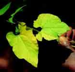
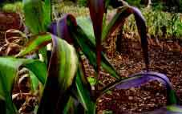
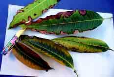
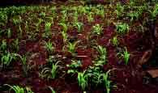
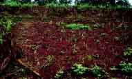

{kind=link}
{kind=link}
Introduction
Nutrients in Soils
For plant growth seventeen elements are essential. They are categorized into macro- and micro- (trace) elements.
Macro-elements | Source |
| Carbon (C), Hydrogen (H2), Oxygen (O) | Air and water |
| Nitrogen (N), Phosphorus (P), Potassium (K), Calcium (C) | Soil solids and some from air |
| Magnesium (Mg), Sulphur (S) | Soil solids |
Trace elements | |
| Iron (Fe), Molybdenum (Mo), Copper (Cu), Zinc (Zn)Manganese (Mn), Cobalt (Co), Boron (Bo), Chlorine (Cl) | Soil solids |
The macronutrients N, P and K are required in large quantities.
How to determine the fertility status of a soil and the nutrient needs of a crop
Sources of plant nutrients include soil reserves (from weathering of rocks), crop residues,as well as organic and inorganic fertilizers that are added to the soil during the growing season. In order to make a decision on which type of fertilizer to use, a number of observations or tests are needed. For farmers observations of crop growth and the plentifulness and dominance of a particular weed or grass may show which nutrients are deficient. For example, the weed striga grows in infertile soils and is suppressed when applying fertilizers. For a more accurate identification and quantification of the nutrients in the soil, tissue and soil tests are necessary.
Generally, dark-coloured soils are assumed to be fertile and high in soil organic matter. Soils with a loamy texture are also assumed to be more fertile than sandy soils.
Symptoms observed in a plant could be a result of nutrient deficiencies, diseases or pest damage. It is important to examine closely the plant leaves, stem and roots to check for insects or signs of diseases. Visual observations assume that what is deficient in a crop is symptomatic of what is lacking in the soil. A nutrient deficiency is suspected when the plant shows any of the following characteristics:
- Very poor initial growth
- Stunting in early growth
- Restricted or abnormal root growth
- Maturing too early or too late
- Growth is different from crops growing close by
- Poor-quality products: appearance, taste, firmness, moisture content
- Leaf symptoms that may point to deficiencies of specific nutrients.
| Nitrogen deficiency in bean leaves |
|  |
| (c) C. Gachene and G. Kimaru, RELMA, 2003 |
| Phosphorus deficiency in young maize leaves |
|  |
| (c) C. Gachene and G. Kimaru, RELMA, 2003 |
| Potassium deficiency in mango leaves |
|  |
| (c) C. Gachene and G. Kimaru, RELMA, 2003 |
Use of Organic Fertilisers: Manure, Compost, Crop Residues
Organic fertilisers are materials derived from plant and animal droppings such as weed residues, tree prunings, urine, green manure, farmyard manure, crop residues, and others. These are used to fertilise the soil. Also grazing livestock play an important role in nutrient flow to cropland. Plants contain three substances that define their quality as organic fertiliser: Nitrogen, Phenols and Lignin.
Nitrogen
All plants need nitrogen to grow. They get it from the soil and/or from the air and store it in their leaves stems and roots. Some plants are good in taking up nitrogen and are valuable organic material or intercrops as they increase the nitrogen amount in the soil. These include legumes such as beans, chickpeas, sesbania, leucaena and many others (see section on green manure). Other plants, e.g. maize, are not so good in taking up nitrogen.
- Plants with a high content of nitrogen have dark green leaves and make a good organic fertiliser
- Plants with yellowish leaves, have little nitrogen and are poor organic fertiliser.
Phenols
Phenols are substances in the plants that make them rot slowly. A plant with a lot of phenols will make low-quality fertiliser. Different parts of plants contain different quantities of phenols. If the stems contain a lot of phenols and the leaves less, then is better to use only the leaves as fertiliser.
- One can tell if a plant has a lot of phenols by tasting it: If it is astringent, that is, makes your tongue curl up, it has probably a lot of phenols and will make a poor fertiliser
Lignin
When plants die, some rot quickly and release the nutrients into the soil within a short time, others rot slowly. Plants that are woody contain a lot of the substance lignin, which makes them rot more slowly. Plants that rot quickly make generally better organic fertiliser, as the crops can use their nutrients sooner. So, plants containing a lot of lignin rot more slowly and make a poor organic fertiliser.
- One can tell if a plant has a lot of lignin by tearing it apart. If it tears easily, it does not have much lignin, making a good fertiliser, If it is hard to tear, it has a lot of lignin and will make a poor fertiliser
Nutrient content (NPK) sin some commonly used organic materials
Organic material | Nitrogen % | Phosphate % | Potash % |
| Cow manure | 0.4-0.6 | 0.2 | 0.2-0.5 |
| Horse manure | 0.5-0.7 | 0.3 | 0.6 |
| Goat manure | 1.4 | 0.2 | 0.3-1.0 |
| Sheep manure | 0.7 | 0.3 | 0.4 |
| Human waste | 2.0 | 1.0 | 0.2 |
| Pig manure | 0.5 | 0.3-0.4 | 0.5-0.8 |
| Poultry manure | 1.1-1.5 | 0.8-1.3 | 0.5-2.7 |
| Rabbit manure | 1.1-2.4 | 1.2-1.4 | 0.6 |
| Boma (mixed animals) | 0.7 | 0.1 | 0.7 |
| Compost (household) | 0.5 | 0.2 | 0.8 |
| Grevillea leaves | 1.37 | 0.06 | 0.64 |
| Bean trash | 0.8 | 0.07 | 1.57 |
| Banana stalks | 0.73 | 0.18 | 4.10 |
| Sugar cane trash | 0.47 | 0.06 | 1.23 |
| Banana leaves | 1.3 | 0.1 | 1.72 |
| Coffee husks | 1.63 | 0.14 | 4.45 |
| Sweet potato vines | 1.73 | 0.48 | 6.63 |
| Leucaena leucocephala | 3.74 | 0.26 | 3.37 |
| Napier grass | 1.97 | 0.14 | 3.85 |
| Lantana camara | 2.5 | 0.26 | 1.93 |
| Thitonia leaves | 3.97 | 0.3 | 4.6 |
| Cajanus | 3.62 | 0.21 | n/a |
| Jackbean | 3.45 | 0.16 | n/a |
| Crotalaria ('marejea') | 4.45 | 0.16 | n/a |
| Desmodium | 3.44 | 0.15 | n/a |
| Soybean | 3.52 | 0.15 | n/a |
| Lablab | 4.02 | 0.18 | n/a |
| Mucuna | 3.56 | 0.17 | n/a |
| Lima bean | 3.79 | 0.13 | n/a |
| Purple vetch | 3.68 | 0.16 | n/a |
| Groundnuts | 3.79 | 0.18 | n/a |
(Source: Gachene & Kimaru 2003)
Earthworms
Soil micro- and macro-organisms are responsible for the decomposition of organic matter and formation of humus and thus essential for a healthy soil. They play a key role in the recycling of soil nutrients and greatly improve their availability to plants. Among the macro organisms, earthworms are particularly important as they feed on dead and decaying materials. After digesting, then excrete nutrient-rich dung. Earthworms are promoted by the abundance of good compost. The growth of earthworms in organic wastes is called vermiculture while the processing of wastes using earthworms is called vermicomposting
How to rear earthworms
Materials required:
- A plastic open drum or a wooden box measuring ca. 60 cm deep, 180 cm long and 120 cm wide
- Topsoil with some worms
- Fresh dung or droppings from cattle, sheep, goats, pigs or rabbits
- Dry materials, e.g. grass
- A suitable cover, e.g. a sisal sack
- Some water
Procedure
- Step 1: Mix all the top soil, dung/droppings, grass and some water thoroughly in the open drum or box. Do not use too much water to avoid making the growth medium too wet and therefore unsuitable for worm rearing
- Step 2: Cover the mixture of topsoil, dung etc, with a sisal sack and place the drum or box in the shade. Make sure that moist conditions predominate in the growth medium all the time
- Step 3: Harvesting. In two weeks the worms have grown and multiplied. The big worms can be harvested by sieving them with a wire mesh. Place them in a separate container for use according to the desired purpose.
Using earthworms to make vermicompost
Vermicomposting is the use of earthworms to transform organic materials into rich, organic fertilisers. They accelerate the composting process and the addition of this compost to the soil, results in improved chemical, biological and physical properties and better conditions for plant growth.
Common earthworm species used are the following:
- The tiger worm (Eisenia foetida). This is the most commonly used species in commercial vermiculture and waste reduction. This species is raised in Kenya by several flower farms in the Central Highlands and Rift Valley.
- Kenyan highland forest pigmented earthworm. A not yet identified earthworm was recovered by the author (Mr. Canon E.N. Savala) from highland forest litter near Muguga, Kenya. It produces finer vermicomposts than E. foetida but the chemical composition is comparable).
- African night crawler (Eudrilus eugeniae). This is a large prolific African worm that is cultured in the U.S. and elsewhere. It is somewhat difficult to raise because of its intolerance to low temperature and handling. The use of E. eugeniae in outdoor vermiculture is limited to tropical and sub-tropical regions because it prefers warmer temperatures and cannot tolerate extended periods below 16degC.
- Perionyx excavatus. This is a species well adapted to vermicomposting in the tropics. The earthworm is extremely prolific and easy to handle and harvest but it cannot tolerate temperatures below 5degC, making it more suited to the tropics.
- Dendrobaena veneta. A large worm with potential to be used in vermiculture and that can also inhabit soils. It has a slow growth rate and the least suitable species for rapid organic matter breakdown.
- Polypheretima elongata. The species is suited for use in reduction of organic solids, municipal and slaughterhouse waste, human waste and poultry and dairy manure but it is not widely available. It is restricted to tropical regions, and may not survive temperate winters.
The production of vermicompost requires from three to six months.
How to make vermicompost - Bed Technique
Step 1. Construct the bed. Prepare a bed with a concrete, wood or plastic sheet bottom and construct walls 20 to 30 cm in height using wood, logs or stone. Place a wooden board across the bottom and line with chicken wire for better handling and aeration.
Step 2. Add coarse material. Place a 10 to 15 cm layer of coarse organic materials such as banana trash, maize stover, coffee husks and other crop residues on top of the chicken wire. The material must not contain poultry manure as this is harmful to worms.
Step 3. Add fine material and water. Place a 5 to 10 cm layer of manure on top of the coarse material. Cattle, pig, sheep or goat manure are suitable. Green manure, such as tree leaves or grass cuttings may be substituted. Mix some of the fine material with the coarse layer. Mixtures of fine materials such as grass cuttings, bean threshing, maize or wheat bran and brewery waste are preferable. If the fine material is available in short supply, then use it to surround specific areas where earthworms are released. Moisten the organic materials prior to the introduction of the worms. Sufficient water should be applied so that no pockets of dried material remain. Wet materials such as banana trash and fresh manure need little watering while dried materials may require as much as 30 liters of water per m2 of bed.
Step 4. Release worms. Release the earthworms into the moist bed. Avoid handling individual worms, rather place small handfuls of material rich in earthworms (clusters) into 'holes' spaced about 0.5 m apart.
Step 5. Cover the bed. Cover the bed with banana leaves or dark polythene plastic. Inspect the bed regularly during composting for moisture and the presence of predators. Ants will usually leave the bed if the underlying chicken wire is violently and repeatedly shaken. Add new layers of banana leaves occasionally as the worms consume older leaves.
Step 6. Feed the bed. Organic materials may be applied to the bed regularly as additional layers or in discrete locations. A common practice is to periodically apply additional organic wastes by burying them in different positions within the bed. Vermicompost is ready after three to six months. Additional feeding prolongs the vermicomposting process but yields larger amounts of vermicompost. Withhold feed about three weeks before the vermicompost is collected to obtain a finer and more homogeneous and finished product.
Step 7. Recover worms and vermicompost. When the vermicompost is ready, worms are harvested and compost processed. Place a fine feed material on the bed prior to vermicompost harvesting to facilitate the collection of worms from subsequent 'batches'. Wheat bran, brewers' waste or fresh cattle manure are particularly good feeds that lure earthworms. Collected worms may also be fed to fish and poultry. Spread vermicompost in the sun to collect other pockets of worms by hand as the vermicompost dries. Once worms are collected, the vermicomposting cycle may be repeated. The finished vermicompost is uniform, dark and fine textured. It is best used as the main ingredient in a seedling or potting medium after passing it through a 5 or 10 mm mesh. A typical nutrient content from a manure-based vermicompost using E. foetida is 1.9% N, 0.3% P and 2.7% K.
Source: Savala, E.N.C. (2003)
Liming
For soils to be productive, they must be in the optimum pH range. A pH range of 5.5 to 6.5 is satisfactory for moderate yields of most crops. Though, for high yields, the optimum pH values/ ranges differ for different soils and crops. Values under pH 4.5 to 5.0 (acid) can severely damage the plants by causing nutrient deficiencies (e.g of P, Mg, etc) and toxicities (of Al. Mn, Fe). To neutralise soil acidity, lime must be applied.
How to know if the soil is acid?
- Have the pH of the soil determined. Ask your agricultural extension officer where to test the pH of your soil
Application of lime
The amount of lime to apply, depends on the pH and texture of the soil. The more acid the soil, the more lime it needs. Claey soils and soils with high organic matter need also to be limed.To increase the pH of the different soil types, the following quantities of agricultural lime are required (Use them only as a guideline):
Soil texture | pH 4,5-5,5 t/ha | pH 5,5-6,5 t/ha |
| Sand to sandy loam | 0.5 | 0.75 |
| Sandy loam | 1.0 | 1.5 |
| Loam | 1.5 | 2.0 |
| Silt loam | 2.5 | 3.0 |
| Clay loam | 3.0 | 4.0 |
When must lime be applied and how often?
- In case of heavy soils apply lime once every 3-4 years on average. After 2-3 years after application you see the the optimum effect
- After 3 years test the pH again to check if further liming is still needed
- Apply small quantities of lime more often to avoid over liming in sandy soil
- Lime can be applied every time of the year, but better before ploughing. Apply lime at least 6-8 weeks before planting or sowing as it reacts slowly in the soil
Note: Beware of applying too much lime! If soils are too alkaline, nutrients such as iron, manganese, zinc and phosphorus become inaccessible to crops.
- Agricultural lime with a minimum calcium carbonate (CaCO3) content of 80%
- Dolomitic lime includes equal quantities of calcium and magnesium carbonate (CACO3 + MgCO3) and should be used on acid soils with a magnesium deficiency.
- Slaked lime or building lime is usually more economical but absorbs moisture and is caustic, which makes handling unpleasant
Advantages of liming
- Neutralises acid soil and corrects the pH so that higher yields can be obtained
- Ensures the water-solubility and availability of phosphates to crops
- Prevents molybdenum deficiency
- Promotes the activity of earthworms and nitrogen-fixing bacteria as well as the rotting of organic material that releases nitrogen, phosphorus, sulphur and micro-elements.
- Improves the action of fertilisers
- It is economical
- Prevents the build up of toxic levels of aluminium and manganese
- Prevents calcium and magnesium deficiencies
- Improves the structure of heavy soils
Lime applied
|  |
| Effects of lime on young maize crop grown in acid soils: lime applied |
| (c) C. Gachene and G. Kimaru, RELMA, 2003 |
No lime application
|  |
| Effects of lime on young maize crop grown in acid soils: no lime |
| (c) C. Gachene and G. Kimaru, RELMA, 2003 |
Local reference address for lime products:
Homa Lime Co. Ltd, KORU 40104, Kenya
Tel. No. 254- (020) 2333678/9
Mobile: 254-(0)722-754664 / 254-(0)733-666606
E-mail: info@homalime.com / homalime@africaonline.co.ke www.homalime.com
Information Source Links
- Directorate Agricultural Information Services (2000). Application of lime. National Department of Agriculture, Pretoria, South Africa. www.daff.gov.za
- FAO (2001). Soil fertility management in support of food security in sub-Saharan Africa. ISBN 978-925104-5633
- Gachene, C.K.K. and Kimaru, G. (2003). Soil Fertility and Land Productivity - A guide for extension workers in the eastern Africa region. Technical Handbook No.30. Regional Land Management Unit (RELMA) / Swedish International Development Cooperation Agency (Sida). ISBN: 9966-896-66-X.
- Gichuru, M.P., Bationo, A., Bekunda, M.A., Goma, H.C., Mafongonya, P.L., Mugendi, D.N., Murwira, H.M., Nandwa, S.M., Nyathi, P. and Swift, M.J. (2003). Soil Fertility Management in Africa: A Regional Perspective. Academy Science Publishers, Nairobi, Kenya. ISBN: 9966-24-063-2
- Russel, E.W. (1973). Soil Conditions and Plant Growth. 10th Edition. Longman Group Limited, London.
- Savala, C.E.N. (2003). Using Earthworms to Make Vermicompost. Chapter 11
- Schroth, G. and Sinclair, F.L. (2003). Trees, Crops and Soil Fertility. CABI Publishing. ISBN: 9780851995939
- Spore No.139 February 2009. Dossier Soil Fertility. spre.cta.int